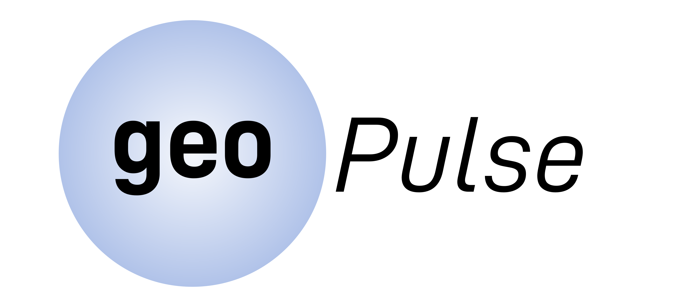
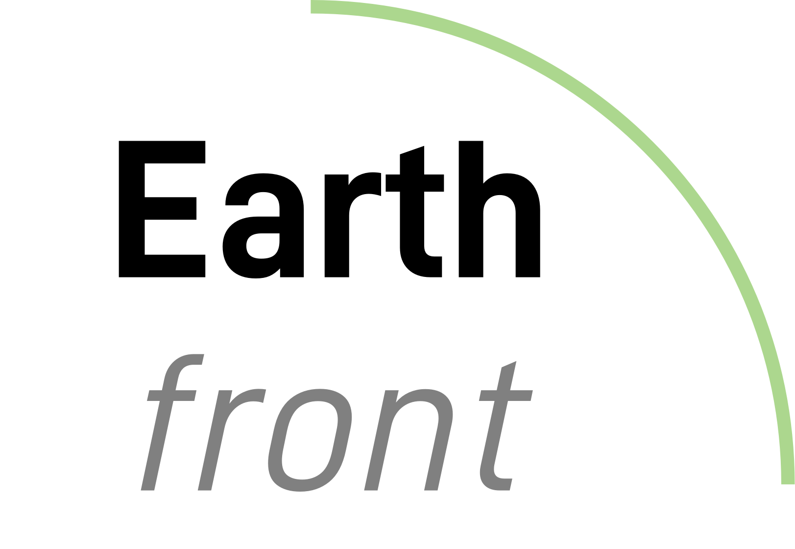
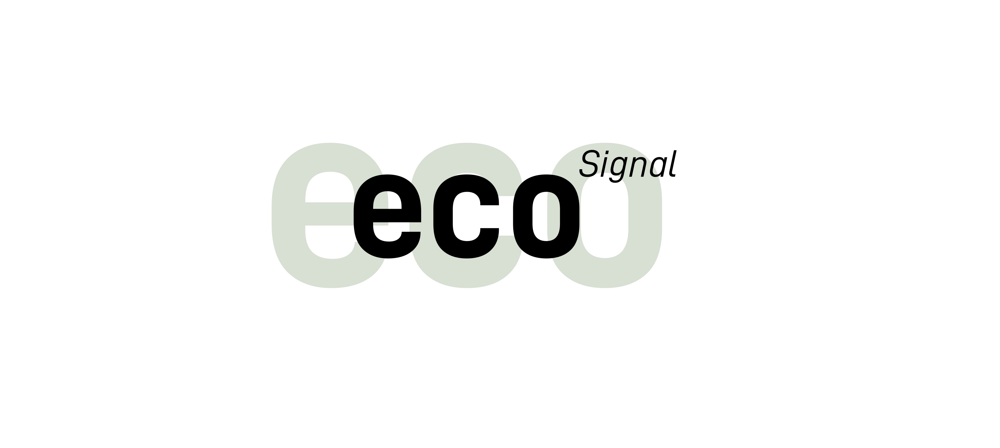

Journal Reading

GeoPulse
A journal-tracking page for recent updates from
- Remote Sensing of Environment
- ISPRS Journal of Photogrammetry and Remote Sensing
- International Journal of Geographical Information Science
- Annals of the American Association of Geographers
organized by journal and publication date.

EarthFront
A journal-tracking page for recent updates from
- One Earth
- Nature Sustainability
- Nature Geoscience
- Nature Climate Change
organized by journal and publication date.

EcoSignal
A journal-tracking page for recent updates from
- Journal of Ecology
- Journal of Applied Ecology
- Nature Ecology & Evolution
- Ecology Letters
- Global Change Biology
- The American Naturalist
organized by journal and publication date.